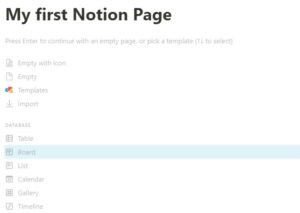
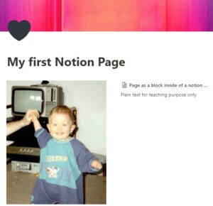
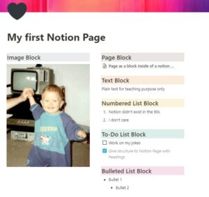
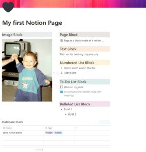
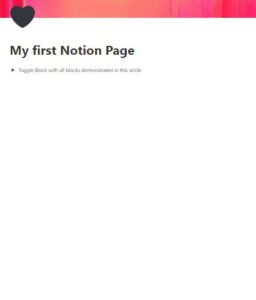
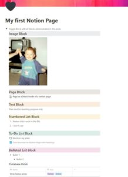

Notion – A simple beginners guide
Notion is one of the most flexible note taking and organizing programs out there. That’s because of Notion’s block system. So today I’m going to show you how blocks work.
Blocks and their hierarchies allow you to build your Notion environment the way you want it to be. When I say hierarchy I actually mean: basically there is no hierarchy. That’s what makes this program so adaptive and unfortunately a bit complicated to start with.
Page Block
Everything in Notion happens inside Notion pages. Below you can see an empty Notion page with only the title already defined.

Above the title you can add an icon and a cover image. This is for visual purposes only, but it’s a nice stylistic element.
Below the title is where the real magic happens. Here you can add blocks by left-clicking anywhere below the title and typing „/“. Then you can insert a block of your choice.
A notion page is also just a block and you can add it to a page. That’s what I mean by saying here is no hierarchy in Notion.
Below the title there is now another page with the title „Page as a block inside of a notion page“. If I select this page block, I have another empty page in front of me.
Text Block
A text block, as the name indicates, creates plain text. You don’t even have to type „/“. Just click wherever you want your text and start typing.
Image Block
Of course you can also add pictures to a page. Here is a picture of me when I first got in touch with Notion.

Did I already tell you that you can move blocks anywhere you want? Just grab it on the left and move it to wherever you want it to be. This way you can arrange them next to each other, as you can see above.
Heading, Numbered List, To-Do List, Bulleted List Blocks
To give the page some structure, I gave the added blocks headings and a background color.
Numbered list blocks and bulleted list blocks can be added via „/“, just like any other block. However, this can also be done more quickly by writing „1.“ or “ – „. The text block will then be converted automatically.

Database Block
Databases are probably the most powerful element within Notions. Inside databases you can assign metadata to your Notion pages. Afterwards you can filter by this metadata and display it the way you like it (e.g. like a Kanban board).

I have already dedicated an entire video about databases and repeating that would go beyond the scope of this article. So just have a look.
Toggle List Block
To conclude I’ll show you the toggle block. A useful block to structure pages or for learning purposes. A toggle block can be filled with all blocks of your choice and then be opened and closed.


Future Notion Topics
Now you already know some blocks and can build your first notion page. As always, practice makes perfect. If you need help becoming a master:
- More articles on this topic will follow on this website
- You are welcome to book an online appointment with me here. Ask me your questions and I will answer them.
Weitere Artikel

Digitale Tools für Zusammenarbeit im Office
E-Mail, Digitale Ablage und eine Branchensoftware sind schon lange nicht mehr genug für effiziente Zusammenarbeit. Doch bevor Sie sich in einem Dschungel an digitalen Werkzeugen verlieren, sollten Sie sich über die Systematik …

Puffer sichern Flow
Es wird allerhöchste Zeit, sich von der Idee, dass nur wer am Limit arbeitet, effizient sei, zu verabschieden. Unter Volllast, ganz ohne Puffer zu arbeiten ist eine „gute“ Voraussetzung für Unzuverlässigkeit, Fehler …